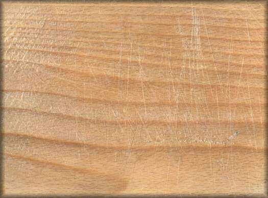

|
wie du vielleicht schon mitbekommen hast, ist niki, unser schlagzeuger aus der band ausgestiegen. er hatte seine gründe. am 3.8. spielte er das letzte mal mit uns zusammen. als neuer schlagzeuger konnte manuel "diana" dinhof, dini, aus neusiedl gewonnen werden. der abschied fiel nicht leicht, doch mit dini haben wir sicher einen sehr guten schlagzeuger und freund gefunden. danke niki und danke dini. willst du uns einmal privat sehen, also bei einer bandprobe dabeisein- schicke eine e-mail empfehlung des tages: internet explorer 5 bei 1024x768 idee: pabst stefan + treppo christian design: pabst stefan umsetzung: treppo christian |